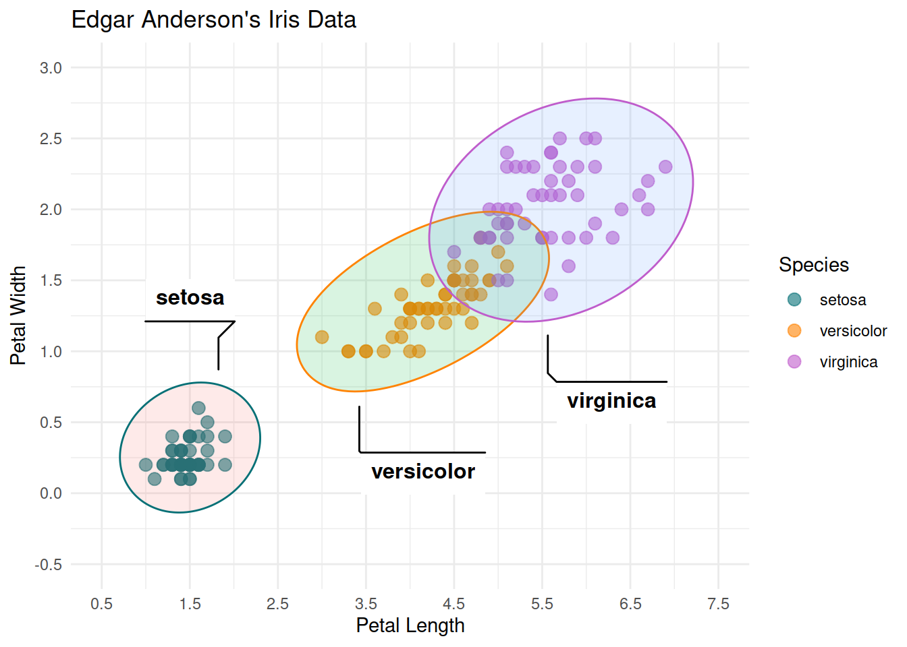

cpus <- scan("data/cpus.txt")
examen <- read.table("data/examen.txt", header = TRUE)Analyse exploratoire des données
De la théorie à la pratique (TP 1)
Author
Timothée Van Hove
Introduction
Note
Dans ce rapport, les questions et parties issues de la consigne fournie sont représentées par des “callouts” bleus.
Le texte des questions est en gras
La fin de la question principale est suivie d’une séparation
La réponse est en format normal
Questions imbriquées.
Si des questions sont posées de manière imbriquées, elles sont représentées par des callouts imbriqués
Le texte est toujours en gras, mais in n’y a pas de spéaration
La réponse est en format normal
Exercice 1
Question a.
Les données se trouvent dans le répertoire data /data
Question b.
Charger les données dans R en utilisant les fonctions scan() et read.table()
Question c.
Pour voir le contenu de l’objet cpus, taper l’instruction cpus
[1] 46 110 38 22 11 510 38 76 21 92 44 66 24 10 25 915 26 56 40
[20] 7 185 141 14 24 19 24 32 33 370 58 12 66 62 12 45 133 64 144
[39] 36 130 16 36 65 136 60 18 66 30 100 36
Question d.
Question e.
Question f.
Question g.
Il est possible d’accéder directement aux composantes d’une table par le nom. Par exemple, si on veut afficher la composante note de l’objet examen, on peut utiliser la commande
Question h.
Question i.
La méthode la plus simple pour créer un vecteur consiste à énumérer ses éléments à l’aide de la fonction c() :
[1] 2.9 3.4 3.4 3.7 3.7 2.8 2.1 2.5 2.6
Question j.
Exercice 2
La performance relative au processeur IBM 370/158-3 de 50 processeurs d’ordinateurs a été relevée. L’objet cpus contient les valeurs observées.
Question a.
Construire un diagramme branche-et-feuilles, un histogramme et une boîte à moustaches des données observées à l’aide des commandes ci-dessous.
The decimal point is 2 digit(s) to the right of the |
0 | 111111222222223333344444445566666777789
1 | 01334449
2 |
3 | 7
4 |
5 | 1
6 |
7 |
8 |
9 | 2par(mfrow=c(1,2), pty="s")
hist(cpus, xlab="performance relative", ylab="fréquence", main="",
col="darkslategray4")
boxplot(cpus, xlab="performance relative", col="darkslategray4", horizontal=T)
rug(cpus)
Question a1.
Quels sont les effets de cette commande ?
stem(cpus) va produire un diagramme branche-et-feuilles des données contenues dans cpus.
par(mfrow=c(1,2), pty="s") ajuste les paramètres graphiques. En particulier, mfrow=c(1,2) indique que les graphiques qui suivent seront disposés en une ligne et deux colonnes (un à côté de l’autre). pty="s" rend le tracé carré.
hist(cpus, xlab="performance relative", ylab="fréquence", main="", col="darkslategray4") produit un histogramme de la performance relative des cpus. Les labels des axes x et y sont respectivement “performance relative” et “fréquence”. La couleur du remplissage des barres est “darkslategray4”.
boxplot(cpus, xlab="performance relative", col="darkslategray4", horizontal=T) produit une boîte à moustaches (boxplot) des données. Le graphique est affiché horizontalement (grâce à horizontal=T).
Question a2.
Quel est l’effet de la fonction rug() ?
rug(cpus) ajoute de petites marques en bas de l’axe des x pour chaque donnée dans cpus. Cela permet de visualiser la densité des données le long de cet axe. En d’autres termes, elle montre où se trouvent les valeurs réelles dans le jeu de données.
par(mfrow=c(1,1)) réinitialise les paramètres graphiques pour afficher un seul graphique à la fois.
Question b.
Commenter la distribution des valeurs observées en se basant sur les graphiques de la Figure 1 : valeur(s) atypique(s), asymétrie.
Distribution: Nous pouvons observer sur l’histogramme une distribution asymétrique positive
Valeurs atypiques: Nous pouvons observer sur le boxplot qu’il y a 4 valeurs atypiques: 185, 370, 510 et 915.
Question c.
Calculer la performance relative médiane et la performance relative moyenne des valeurs observées en utilisant les fonctions de R adéquates.
Avec la fonction median() nous calculons la performance médiane:
# Calcul de la médiane
performance_mediane <- median(cpus)
print(paste("Performance relative médiane:", performance_mediane))[1] "Performance relative médiane: 42"Avec la fonction mean() nous calculons la performance moyenne:
# Calcul de la moyenne
performance_moyenne <- mean(cpus)
print(paste("Performance relative moyenne:", performance_moyenne))[1] "Performance relative moyenne: 86.88"
Question c1.
Est-il plus approprié d’utiliser la médiane ou la moyenne ?
Etant donné que nous avons des valeurs atypiques qui sont nettement plus élevées que la majorité des autres valeurs, elles peuvent avoir un effet significatif sur la moyenne, la rendant plus élevée qu’elle ne le serait autrement. Dans ce cas, la médiane pourrait être une meilleure mesure de la tendance centrale pour cet ensemble de données.
Question d.
Déterminer le(s) mode(s) des valeurs observées à l’aide des commandes suivantes :
La commande ci-dessus permet de déterminer la valeur ou les valeurs qui apparaissent le plus souvent, c’est-à-dire le mode ou les modes de l’ensemble de données.
Les valeurs obtenues 24 36 66 indiquent que l’ensemble de données est multimodal. cela signifie qu’il a plusieurs “pics”. Une distribution multimodale peut suggérer la présence de sous-groupes distincts.
Question e.
Que fait la commande suivante ?
La commande summary(cpus) fournit un aperçu statistique basique de l’objet cpus. Pour un vecteur comme cpus, cela retourne :
- Minimum: La plus petite valeur de l’ensemble de données.
- 1st Qu.: Le premier quartile. 25% des données sont inférieures ou égales à cette valeur.
- Median: La médiane. 50% des données sont inférieures ou égales à cette valeur.
- Mean: La moyenne arithmétique de l’ensemble de données.
- 3rd Qu.: Le troisième quartile. 75% des données sont inférieures ou égales à cette valeur.
- Maximum: La plus grande valeur de l’ensemble de données.
Question f.
En effectuant aucun calcul, décrire l’effet sur la moyenne et sur la médiane des trois interventions suivantes :
Question f1.
ajouter un processeur de performance relative 43
Moyenne : Elle diminuera, mais étant donné que 43 est proche de la moyenne initiale de 86.88, l’effet sur la moyenne sera minimal.
Médiane : Étant donné que la médiane actuelle est de 42, l’ajout d’une valeur de 43 pourrait déplacer légèrement la médiane vers le haut, en fonction de la répartition exacte des données.
Question f2.
soustraire 9 à chaque valeur observée
Moyenne : En soustrayant un nombre constant de chaque observation, la moyenne sera également réduite de ce même montant..
Médiane : La médiane sera également réduite de 9, car chaque valeur est diminuée de ce montant.
Question f3.
diviser chaque observation par 3.
Moyenne : Si chaque observation est divisée par un nombre constant, la moyenne sera également divisée par ce nombre.
Médiane : De même, la médiane sera divisée par 3.
Question g.
Calculer l’écart-type des performances relatives une fois avec les valeurs atypiques et une fois sans en utilisant la fonction sd(). Les valeurs atypiques peuvent être déterminées à l’aide de la fonction boxplot() avec plot=FALSE comme argument.
Avec toutes les valeurs (incluant les atypiques) :
[1] "Ecart type complet: 148.429415644512"Sans les valeurs atypiques :
D’abord, identifions les valeurs atypiques avec la fonction boxplot() :
[1] "Valeurs atypiques:"[1] 510 915 185 370Maintenant, retirons ces valeurs atypiques de l’ensemble de données original :
Enfin, calculons l’écart-type pour cet ensemble sans les valeurs atypiques :
[1] "Ecart type sans valeurs atypiques: 38.5863984446273"
Question g1.
Que constate-t-on ? L’écart-type est-il un indicateur robuste ?
Les valeurs atypiques ont un effet majeur sur l’écart-type, ce qui souligne la sensibilité de cet indicateur aux valeurs extrêmes. Une petite quantité de valeurs atypiques peut fausser la mesure de la dispersion, rendant l’écart-type beaucoup plus élevé qu’il ne le serait autrement. L’écart-type n’est pas un indicateur robuste en présence de valeurs atypiques, car il ne résiste pas bien à ces perturbations.
Exercice 3
Les étudiants suivant un cours de Probabilités et Statistique dans une école d’ingénierie ont passé l’examen de fin d’unité. Le cours était donné par le même professeur à étudiants répartis en deux groupes notés A et B. Les résultats obtenus sont contenus dans l’objet examen. On se demande si une différence significative existe entre les deux groupes à l’examen.
Question a.
Question b.
Rajouter les bâtonnets des notes des étudiants des deux classes, sur le côté gauche des boîtes à moustaches pour la classe (side=2 comme argument de la fonction rug()) et sur le côté droite pour la classe (side=4 comme argument de la fonction rug()).
Rajout des bâtonnets:
# Séparation des notes par groupe
note.A <- split(examen$note, examen$groupe)$A
note.B <- split(examen$note, examen$groupe)$B
# Affichage des boîtes à moustaches
lblue <- "#528B8B"
par(pty="s")
boxplot(note~groupe, data=examen, ylim=c(1,6), xlab="groupe",
varwidth=T, col=lblue, main="examen")
abline(h=4, lty=2)
# Ajout des bâtonnets pour le groupe A
rug(note.A, side=2)
# Ajout des bâtonnets pour le groupe B
rug(note.B, side=4)
Question c.
En se basant sur la Figure 2, existe-t-il une différence significative entre les deux groupes à l’examen de fin d’unité ?
Oui il existe une différence significative. Nous pouvons observer que l’étendue inter-quartile du groupe A et du groupe B ne se superpose (presque) pas, donc que nous avons 2 distributions séparées. Nous avons 75% des élèves du groupe B qui ont une meilleure note, ou une note équivalente que les 25% meilleurs élèves du groupe A.
Question d.
Observe-t-on sur les boîtes à moustaches une différence entre les dispersions des deux groupes ?
Nous pouvons observer que l’étendue et l’étendue inter-quartile du groupe A est plus “grande” que celle du groupe B. Cela signifie que les notes du groupe A ont une plus grande dispersion.
Question e.
Calculer les écarts-types des deux groupes à l’aide des fonctions by() et sd().
result <- by(examen$note, examen$groupe, sd)
print(paste("Ecart type groupe A:", round(result['A'], 3)))[1] "Ecart type groupe A: 0.866"[1] "Ecart type groupe B: 0.753"
Question e1.
En se basant sur les écarts-types, existe-t-il une différence en dispersion entre les deux groupes à l’examen de fin d’unité ?
Oui. Le groupe A a un écart-type légèrement plus élevé que le groupe B, ce qui signifie que les scores du groupe A sont légèrement plus dispersés autour de leur moyenne que ceux du groupe B.
Question f.
Que peut-on déduire en comparant les conclusions établies en c., d. et e. ?
Comparaison des centres : La médiane du groupe B est supérieure à celle du groupe A, ce qui indique que le centre de la distribution des notes pour le groupe B est plus élevé que pour le groupe A.
Comparaison de la dispersion avec l’écrat-type : Les notes du groupe A sont légèrement plus dispersées que celles du groupe B, comme indiqué par un écart-type légèrement plus élevé.
Comparaison de la dispersion avec Étendue interquartile : L’IQR du groupe A est plus grand que celui du groupe B, ce qui suggère que la majorité (50%) des notes du groupe A sont légèrement plus dispersées que celles du groupe B.
Comparaison des étendues : Les notes du groupe B vont de plus faibles à plus élevées que celles du groupe A. Il est particulièrement intéressant de noter que le minimum du groupe B (3.200) est supérieur au 1er quartile du groupe A (3.075), ce qui indique une différence notable dans la distribution des scores.
Conclusion : Les élèves du groupe B ont généralement obtenu de meilleures notes que ceux du groupe A, comme le montre la médiane. Bien que les notes du groupe A soient légèrement plus dispersées que celles du groupe B, la dispersion dans le groupe A est en réalité assez comparable à celle du groupe B. Le fait que les boîtes à moustaches ne se chevauchent (presque) pas, est également un indicateur fort d’une différence notable entre les groupes.
Question g.
Un autre graphique pour étudier les éventuelles différences entre les deux groupes à l’examen de fin d’unité se trouve dans la Figure 3. À votre avis, entre les boîtes à moustaches en parallèle et le graphique tracé ci-dessus, lequel est le plus approprié ?
Les 2 graphes ne sont pas utilisés dans le même objectif:
Boites à moustache
Si le principal intérêt est de comparer rapidement la médiane, la dispersion ou d’identifier des valeurs aberrantes entre deux groupes, un boxplot peut être plus approprié. Avantages:
- Donne un résumé rapide des cinq nombres de synthèse
- Identifie facilement les valeurs aberrantes.
- Compare rapidement la dispersion et la médiane entre plusieurs groupes.
Diagramme de densité
Si le principal intérêt est de comparer la visualisation de la forme de la distribution des données, en particulier si on soupçonne des particularités comme la bimodalité, un diagramme de densité est plus approprié. Avantages:
- Montre la distribution complète des données, y compris sa forme.
- Identifie les modes ou les irrégularités dans la distribution.
Conclusion
Pour obtenir un maximum d’informations il serait judicieux d’utiliser à la fois le boxplot et le Diagramme de densité
Exercice 4
Une partie de la base de données du recensement américain de 1994 a été extraite. Elle concerne 48’842 personnes adultes dont on s’intéresse notamment à l’influence que peut avoir le type de scolarité, formation acquise par l’individu, sur le nombre d’heures de travail par semaine. Par simplicité et pour préserver l’authenticité du système éducatif américain, le nom des variables n’est pas traduit en français.
Question a.
Nous nous proposons de tracer les boîtes à moustaches en parallèle du temps consacré au travail par les individus recensés. Pour y parvenir, nous utilisons la librairie ggplot2 qu’il faut d’abord installer puis activer dans votre session.
La librairie ggplot2 explicite les liens conceptuels entre graphiques et analyses statistiques. Sa syntaxe est particulière mais ingénieuse. Elle se base sur un ensemble de composants indépendants qui peuvent être combinés de différentes manières7.
Les données du recensement se trouvent dans la librairie arules de R qui doit être installée puis activée.
Les observations sont lues dans le logiciel à l’aide de la commande
et les variables qui nous intéressent sont sélectionnées et stockées dans l’objet dframe par les commandes
dframe<-AdultUCI[, c("education", "hours-per-week")]
colnames(dframe)<-c("education", "hours_per_week")
str(dframe)'data.frame': 48842 obs. of 2 variables:
$ education : Ord.factor w/ 16 levels "Preschool"<"1st-4th"<..: 14 14 9 7 14 15 5 9 15 14 ...
$ hours_per_week: int 40 13 40 40 40 40 16 45 50 40 ...
Question a1.
Pourquoi ce changement de nom de variable ?
On renomme “hours-per-week” en “hours_per_week”. car le caractère - peut être interprété comme un opérateur de soustraction mathématique.
Question a2.
Tracer les boîtes à moustaches en parallèle de la Figure 4 dans lesquelles est représenté le temps hebdomadaire consacré au travail par les Américains recensés selon leur formation. et commenter le graphique obtenu
ggplot(dframe, aes(x=hours_per_week, y=education)) +
geom_point(colour="lightblue", alpha=0.1, position="jitter") +
geom_boxplot(outlier.size=0, alpha=0.2)Le graphique permet de comparer la distribution des heures travaillées par semaine entre différents niveaux d’éducation. Il peut aider à identifier s’il existe des tendances ou des différences dans le nombre d’heures travaillées en fonction du niveau d’éducation.
Boxplots : Pour chaque niveau d’éducation, il y a un boxplot qui montre les heures travaillées par semaine. Si les boîtes sont larges, cela indique une grande variabilité dans les heures travaillées. Si elles sont étroites, cela indique une faible variabilité.
Scatter plot : Les points bleus montrent des observations individuelles. Grâce à l’option position="jitter".
Question b.
Calculer la proportion d’observations contenant des valeurs manquantes en utilisant les commandes ci-dessous.
[1] 48842 15[1] 0.3824577dim(AdultUCI) donne les dimensions du dataframe AdultUCI. 48842 15 indique que le dataframe contient 48,842 lignes (observations) et 15 colonnes (variables).
nrows<-nrow(AdultUCI) extrait le nombre de lignes du dataframe et le stocke dans la variable nrows.
n.missing<-rowSums(is.na(AdultUCI)) : is.na(AdultUCI) renvoie une matrice de la même taille que AdultUCI avec des valeurs TRUE là où les éléments sont manquants (NA) et FALSE ailleurs. rowSums() somme les valeurs TRUE (considérées comme 1) par ligne. Le résultat est donc un vecteur où chaque élément est le nombre de valeurs manquantes pour la ligne correspondante. La variable n.missing contient donc le nombre de valeurs manquantes pour chaque observation du dataframe.
sum(n.missing>0)/nrows : n.missing>0 renvoie un vecteur logique de la même longueur que n.missing, avec des valeurs TRUE là où le nombre de valeurs manquantes est supérieur à 0, et FALSE ailleurs. sum(n.missing>0) compte combien d’observations ont au moins une valeur manquante. Diviser ce nombre par nrows donne la proportion d’observations ayant au moins une valeur manquante.
Le résultat 0.3824577 indique qu’environ 38.25% des observations dans le dataframe ont au moins une valeur manquante.
Question c.
En se basant sur les boîtes à moustaches en parallèle de la Figure 4, pour quel type de formation observe-t-on la plus grande dispersion du temps de travail ? Existe-t-il une différence entre les médianes des types de formation ? En donner brièvement la raison.
En examinant la largeur des boîtes (IQR) dans les boxplots, nous pouvons voir que le groupe de personnes ayant un niveau de formation 11th a la plus grande dispersion de temps de travail.
En examinant les valeurs médianes, nous voyons clairement que, globalement, la médiane des heures travaillées par semaine est similaire pour tous les niveaux d’éducation, sauf pour les niveaux Doctorate et Prof-school.
Question d.
Pour chaque type de formation, on peut déterminer puis afficher à l’écran le temps maximal de travail hebdomadaire à l’aide des commandes
dframe$education: Preschool
[1] 75
------------------------------------------------------------
dframe$education: 1st-4th
[1] 96
------------------------------------------------------------
dframe$education: 5th-6th
[1] 99
------------------------------------------------------------
dframe$education: 7th-8th
[1] 99
------------------------------------------------------------
dframe$education: 9th
[1] 99
------------------------------------------------------------
dframe$education: 10th
[1] 99
------------------------------------------------------------
dframe$education: 11th
[1] 99
------------------------------------------------------------
dframe$education: 12th
[1] 99
------------------------------------------------------------
dframe$education: HS-grad
[1] 99
------------------------------------------------------------
dframe$education: Prof-school
[1] 99
------------------------------------------------------------
dframe$education: Assoc-acdm
[1] 99
------------------------------------------------------------
dframe$education: Assoc-voc
[1] 99
------------------------------------------------------------
dframe$education: Some-college
[1] 99
------------------------------------------------------------
dframe$education: Bachelors
[1] 99
------------------------------------------------------------
dframe$education: Masters
[1] 99
------------------------------------------------------------
dframe$education: Doctorate
[1] 99La formation pour laquelle un temps maximal a été observé se détermine par les commandes
[1] 99 [1] "5th-6th" "7th-8th" "9th" "10th" "11th"
[6] "12th" "HS-grad" "Prof-school" "Assoc-acdm" "Assoc-voc"
[11] "Some-college" "Bachelors" "Masters" "Doctorate" Pour la majorité des niveaux d’éducation, la valeur maximale de “hours_per_week” est de 99 heures. Il y a 14 niveaux d’éducation pour lesquels certaines personnes ont déclaré travailler 99 heures par semaine.Les seuls niveaux d’éducation où personne n’a déclaré travailler 99 heures par semaine sont “Preschool” et “1st-4th”, où les valeurs maximales sont respectivement de 75 et 96 heures.
Question d1.
Est-ce surprenant?
Oui, cela parrait surprenant. Une semaine compte 168 heures. Si quelqu’un déclare travailler 99 heures par semaine, cela laisse moins de 70 heures pour toutes les autres activités, y compris dormir, manger, les loisirs, etc. Cela peut indiquer une surcharge de travail extrême ou peut-être des erreurs dans les données.
De plus, voir cette valeur maximale sur une large gamme de niveaux d’éducation, du “5th-6th” grade au “Doctorate”, suggère que ce n’est pas spécifique à un certain niveau d’éducation. Cela pourrait indiquer une tendance générale ou une particularité dans la manière dont les données ont été collectées ou rapportées.
Question e.
En s’inspirant des commandes utilisées ci-dessus, déterminer la formation pour laquelle la distribution des temps de travail se caractérise par le plus petit écart-type.
# Calculer l'écart-type pour chaque niveau d'éducation
std_devs <- by(dframe$hours_per_week, dframe$education, sd, na.rm=T)
# Afficher les écarts-types
print(std_devs)dframe$education: Preschool
[1] 11.434
------------------------------------------------------------
dframe$education: 1st-4th
[1] 12.22667
------------------------------------------------------------
dframe$education: 5th-6th
[1] 11.37219
------------------------------------------------------------
dframe$education: 7th-8th
[1] 14.56277
------------------------------------------------------------
dframe$education: 9th
[1] 11.46478
------------------------------------------------------------
dframe$education: 10th
[1] 13.91801
------------------------------------------------------------
dframe$education: 11th
[1] 13.9968
------------------------------------------------------------
dframe$education: 12th
[1] 12.62027
------------------------------------------------------------
dframe$education: HS-grad
[1] 11.42384
------------------------------------------------------------
dframe$education: Prof-school
[1] 14.98344
------------------------------------------------------------
dframe$education: Assoc-acdm
[1] 12.1991
------------------------------------------------------------
dframe$education: Assoc-voc
[1] 10.94331
------------------------------------------------------------
dframe$education: Some-college
[1] 12.79618
------------------------------------------------------------
dframe$education: Bachelors
[1] 11.42306
------------------------------------------------------------
dframe$education: Masters
[1] 12.14094
------------------------------------------------------------
dframe$education: Doctorate
[1] 14.9196# Trouver la formation avec le plus petit écart-type
min_std_dev <- min(std_devs, na.rm=T)
education_min_std_dev <- names(std_devs)[std_devs == min_std_dev]
print(paste("La formation avec le plus petit écart-type est:", education_min_std_dev, "avec un écart-type de:", round(min_std_dev, 3)))[1] "La formation avec le plus petit écart-type est: Assoc-voc avec un écart-type de: 10.943"
Question f.
Observe-t-on un résultat similaire en utilisant l’étendue interquartiles à l’aide de la fonction IQR()?
# Calculer l'IQR pour chaque niveau d'éducation
iqr_values <- by(dframe$hours_per_week, dframe$education, IQR, na.rm=T)
# Afficher les valeurs de l'IQR
print(iqr_values)dframe$education: Preschool
[1] 10
------------------------------------------------------------
dframe$education: 1st-4th
[1] 5
------------------------------------------------------------
dframe$education: 5th-6th
[1] 0
------------------------------------------------------------
dframe$education: 7th-8th
[1] 5
------------------------------------------------------------
dframe$education: 9th
[1] 3.25
------------------------------------------------------------
dframe$education: 10th
[1] 10
------------------------------------------------------------
dframe$education: 11th
[1] 20
------------------------------------------------------------
dframe$education: 12th
[1] 15
------------------------------------------------------------
dframe$education: HS-grad
[1] 3
------------------------------------------------------------
dframe$education: Prof-school
[1] 15
------------------------------------------------------------
dframe$education: Assoc-acdm
[1] 5
------------------------------------------------------------
dframe$education: Assoc-voc
[1] 5
------------------------------------------------------------
dframe$education: Some-college
[1] 7.75
------------------------------------------------------------
dframe$education: Bachelors
[1] 10
------------------------------------------------------------
dframe$education: Masters
[1] 10
------------------------------------------------------------
dframe$education: Doctorate
[1] 15# Trouver la formation avec le plus petit IQR
min_iqr <- min(iqr_values, na.rm=T)
education_min_iqr <- names(iqr_values)[iqr_values == min_iqr]
print(paste("La formation avec la plus petite étendue interquartile est:", education_min_iqr, "avec un IQR de:", round(min_iqr, 3)))[1] "La formation avec la plus petite étendue interquartile est: 5th-6th avec un IQR de: 0"Non, nous n’avons pas les meme résultats: l’équart type et l’IQR n’identifient pas la meme formation. Cela signifie que ce niveau d’éducation a des valeurs extrêmes ou atypiques qui influencent l’écart-type mais pas l’IQR:
Ici le graphique comparatif de ces deux formations “5th-6th” et “Assoc-voc” :
# Filtrer le dataframe pour ne conserver que les formations "5th-6th" et "Assoc-voc"
subset_dframe <- dframe %>% filter(education %in% c("5th-6th", "Assoc-voc"))
# Créer le graphique
ggplot(subset_dframe, aes(x=hours_per_week, y=education)) +
geom_point(colour="lightblue", alpha=0.3, position="jitter") +
geom_boxplot(outlier.size=0, alpha=0.5)Nous pouvons observer sur le graphique ci-dessus que la formation “Assoc-voc” présente une dispersion plus grande des données autour de la moyenne que la formation “5th-6th”.
La formation “5th-6th” présente une dispersion très faible, en particulier dans la moitié centrale des données. de plus, elle a des valeurs extrêmes qui sont relativement symétriques.
Exercice 5
Question exercice 5
Estimer et justifier les valeurs des coefficients de corrélation des séries de données à l’aide de leurs graphiques de nuage de points tracés dans la Figure 1, la Figure 2, la Figure 3 et la Figure 1
Les points s’alignent clairement le long d’une ligne ascendante. Bien que l’alignement ne soit pas parfaitement sur une ligne diagonale de pente 1 (ce qui indiquerait un coefficient de corrélation de 1), il s’en rapproche. Je l’estime à environ 0,9, reflétant une corrélation positive très forte, mais pas parfaite.
Les points sont dispersés de manière erratique sans suivre une tendance linéaire claire ni dans une direction positive ni dans une direction négative. Cette dispersion suggère l’absence d’une relation linéaire significative entre les deux variables. En d’autres termes, il est difficile de prédire la valeur de l’une des variables en se basant sur l’autre. D’après cette observation visuelle, je dirais que le coefficient de corrélation est très proche de 0, signifiant qu’il n’y a pas de corrélation linéaire entre ces deux variables.
Les points semblent suivre une tendance parabolique qui ressemble à la courbe \(f(x) = x^2\). Cela indique une relation non linéaire claire entre les deux variables. Par conséquent, le coefficient de corrélation linéaire pourrait être proche de 0, ce qui peut être trompeur. En réalité, cela ne signifie pas l’absence de relation, mais plutôt l’absence de relation linéaire.
Les points semblent suivre une tendance linéaire descendante claire. Cette distribution suggère une forte corrélation négative entre les deux variables. D’après la proximité des points à une droite descendante, j’estimerais que le coefficient de corrélation à environ -0.9. Cela signifie qu’une augmentation d’une variable est associée à une diminution proportionnelle de l’autre variable, et vice versa.
Exercice 6
Une étude a été réalisée en botanique sur \(150\) iris. Cinq variables ont été relevées : la longueur (Sepal.Length) et la largeur (Sepal.Width) des sépales, la longueur (Petal.Length) et la largeur (Petal.Width) des pétales, l’unité utilisée étant le centimètre, ainsi que l’espèce (Species) de la fleur (Setosa, Versicolor et Virginica).

Ces données, qui avaient été récoltées par Edgar Anderson, se trouvent déjà dans R. Pour les utiliser dans votre session actuelle, il suffit de taper dans la console le nom de l’objet, iris, qui les contient.
Question a.
Tracer le nuage de points de la largeur (Petal.Width) versus la longueur (Petal.Length) des pétales des iris en utilisant les librairies ggplot2 et ggforce.
pCol <- c('#057076', '#ff8301', '#bf5ccb')
plot.iris<-ggplot(iris, aes(x=Petal.Length, y=Petal.Width, col=Species)) +
scale_color_manual(values=pCol) +
scale_x_continuous(breaks=seq(0.5, 7.5, by=1), limits=c(0.5, 7.5)) +
scale_y_continuous(breaks=seq(-0.5, 3, by=0.5), limits=c(-0.5, 3)) +
labs(title="Edgar Anderson's Iris Data",
x="Petal Length",
y="Petal Width") +
theme(plot.title=element_text(size=12, hjust=.5),
axis.title=element_text(size=10, vjust=-2),
axis.text=element_text(size=10, vjust=-2)) +
geom_point(aes(color=Species), alpha=.6, size=3) +
theme_minimal()
plot.iris +
ggforce::geom_mark_ellipse(
aes(fill=Species, label=Species),
alpha=.15, show.legend=FALSE
) 
Question b.
En se basant sur le graphique de nuage de points, existe-t-il une relation entre la largeur et la longueur des pétales des iris ? Dans l’affirmative, de quelle nature est-elle ?
Il y a une relation positive entre la longueur et la largeur des pétales dans l’ensemble de données iris. Lorsque la longueur du pétale augmente, sa largeur augmente aussi, et vice versa. Cette relation est linéaire et positive.
Question c.
Remarque-t-on des observations inhabituelles dans le graphique de nuage de points ?
Setosa : Ces iris sont bien séparés des deux autres espèces en ce qui concerne la longueur et la largeur des pétales. Ils ont tendance à avoir des pétales plus petits, à la fois en longueur et en largeur.
Versicolor et Virginica : Ces deux espèces peuvent se chevaucher en termes de longueur et de largeur des pétales, mais elles présentent également certaines différences. Les virginica ont généralement des pétales plus grands que les versicolor.
Il n’y a pas d’observations notoirement “anormales” ou “outliers” dans cet ensemble de données. Cependant, il y a des points qui peuvent être plus éloignés de la majorité de leur groupe, en particulier parmi les versicolor et les virginica. Ces points ne sont pas nécessairement des erreurs, mais ils peuvent être des individus qui présentent des variations naturelles par rapport à la majorité de leur espèce.
Question d.
Déterminer la corrélation entre la largeur et la longueur des pétales des iris en utilisant la fonction cor().
Nous voyons bien une corrélation positive forte entre les deux variables, indépendamment de l’espèce.
Question e.
Quelle valeur attribueriez-vous à la longueur des pétales des iris pour distinguer les iris Setosa des deux autres espèces ?
Nous pouvons créer un graphique incluant des boxplots et un graphique de densité. Cela nous permet de visualiser au mieux la répartition en fonction de la longueur des pétales:
Attaching package: 'gridExtra'The following object is masked from 'package:dplyr':
combine# Boxplot horizontal avec rug
p1 <- ggplot(iris, aes(y=Species, x=Petal.Length, fill=Species)) +
geom_boxplot() +
geom_rug(sides="b") +
labs(title="Boxplot of Iris Petal Length", x="Petal Length [cm]") +
theme_minimal() +
theme(legend.position="none",
axis.text.y=element_blank(),
axis.ticks.y=element_blank(),
plot.margin=margin(5.5, 5.5, 5.5, 5.5, "pt")) +
scale_x_continuous(limits=c(0.5, 7.5))
# Diagramme de densité
p2 <- ggplot(iris, aes(x=Petal.Length, fill=Species)) +
geom_density(alpha=0.7) +
labs(title="Density Plot of Iris Petal Length", x="Petal Length [cm]", y="Density") +
theme_minimal() +
theme(legend.position="bottom",
axis.text.y=element_blank(),
axis.ticks.y=element_blank(),
plot.margin=margin(5.5, 5.5, 5.5, 5.5, "pt")) +
scale_x_continuous(limits=c(0.5, 7.5))
# Affichage des deux graphiques l'un au-dessus de l'autre
grid.arrange(p1, p2, ncol=1)Sur le graphique ci-dessus, nous pouvons voir que la longueur des pétales de Setosa est complètement distincte des deux autres espèces. Comme ces deux espèces n’ont pas beaoucoup de valeurs extremes, nous pouvons prendre la valeur moyenne de l’écart entre la valeur maximum de la longueur des pétales de Setosa et la valeur minimum de la longueur des pétales de Versicolor:
# Extraire la valeur max de la longueur des pétales de Setosa
setosa_max <- max(iris$Petal.Length[iris$Species == "setosa"])
# Extraire la valeur min de la longueur des pétales de Versicolor
versicolor_min <- min(iris$Petal.Length[iris$Species == "versicolor"])
# Calculer la valeur moyenne de l'écart
mean_value <- (setosa_max + versicolor_min) / 2
mean_value[1] 2.45La valeur de 2.45 peut donc bien distinguer ces deux espèces
Question f.
Des animations peuvent être créées dans R en utilisant la librairie gganimate. Un exemple peut être conçu en utilisant le code ci-dessous.
Question g.
(En option bonus) Installer la librairie reticulate qui permet de faire du Python à partir de RStudio IDE. Fixer ensuite l’interpréteur Python dans la rubrique Python de la boîte de dialogue Options. Cette boîte de dialogue s’affiche à l’écran en utilisant le menu Tools puis Global Options… de RStudio IDE.
La lecture de l’objet iris de R en Python s’effectue en utilisant la commande
Reconstituer le graphique ci-dessous en utilisant en particulier les librairies pandas, numpy et le module matplotlib.pyplot de la bibliothèque matplotlib de Python.
# Importation des bibliothèques nécessaires
import numpy as np
import pandas as pd
import matplotlib.pyplot as plt
# Récupération du jeu de données Iris
iris_py = r.iris
# Définition des couleurs pour chaque espèce d'Iris
colors = {'setosa': 'red', 'versicolor': 'green', 'virginica': 'blue'}
# Création d'un nuage de points (scatter plot) pour le jeu de données Iris
# Les couleurs sont attribuées selon l'espèce de chaque point
iris_py.plot.scatter(x='Petal.Length', y='Petal.Width', c=iris_py["Species"].map(colors))
# Définition des labels pour les axes x et y
plt.xlabel("petal length (cm)")
plt.ylabel("petal width (cm)")
# Définition du titre du graphique
plt.title("Iris Dataset")
# Affichage du graphique
plt.show()